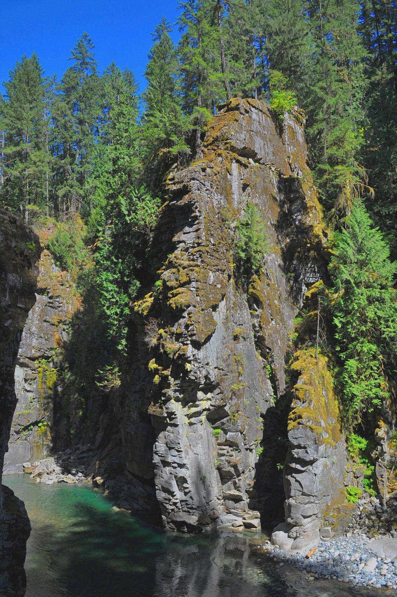

Podcast
The Freshwater Stream
There is a myth here in British Columbia that our rivers and lakes provide limitless, clean water. Host Danielle Paydli follows the real story — through the voices of community leaders, scientists and advocates across the province.
Season 2 · The CodeBlue series
Latest episodes
Season 1 (six episodes) features Dr. Shannon Waters, Shannon McPhail, Mark Angelo, Lauren Terbasket, Tara Marsden, Trixie Bennett, Jennifer Houghton and Stan Swinarchuk — find it wherever you listen.